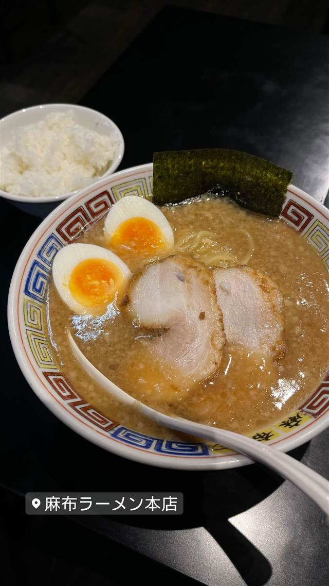

麻布ラーメン 本店
港区内だけで展開するご当地チェーン、屋台がルーツの醤油豚骨ラーメン
麻布ラーメン本店
「麻布ラーメン」は港区内だけで展開するご当地ラーメンチェーン。南麻布の本店は屋台をルーツに持ち、2018年に建物取り壊しで一時閉店した後、2019年9月に現在地で移転オープンした。豚骨の香り漂う醤油ラーメンが名物。
TRIVIA
豆知識
- 港区内だけに店舗を構える珍しいご当地ラーメンチェーン
- 本店は屋台がルーツで、2019年9月に現在地へ移転した
REVIEWS
世間の評判
89.7ラーメンDB
見た目より軽い背脂豚骨醤油
- 背脂が浮いた見た目より意外としつこくないスープという声がある
- サービスライスや旨辛モヤシ食べ放題などボリューム面を評価する人もいる
- 評価は控えめで突出した美味しさではないという声もある
ラーメンデータベース 口コミ10件・最新 2023-11
| 創業 | チェーン全体の創業年は不明。南麻布の本店は屋台をルーツに持ち、2018年に建物取り壊しで一旦閉店、2019年9月に現在地で移転オープン |
|---|---|
| 系譜 | 港区内だけで展開するご当地ラーメンチェーン「麻布ラーメン」の本店（総本山） |
| 看板 | 豚骨の香り漂う醤油豚骨ラーメン |
| どこから | 都心 |
| 営業時間 | 日 11:00-23:00 |
| 定休日 | 日曜・祝日 |
| 場所 | 麻布十番駅 東京都港区南麻布2-5-16 |
| メモ | 黄色い看板が目印。南麻布・麻布十番・西麻布エリアに複数店舗を展開 |
食べたもの：ラーメン
NEARBY
近い店・同じ系統の店
-
 ★
醤油・中華そば 大口駅
中華そば 髙野
元美容師の店主が作る、昆布水に浸した自家製麺の中華そば
昼 ¥1,000～¥1,999 夜 ¥1,000～¥1,999
★
醤油・中華そば 大口駅
中華そば 髙野
元美容師の店主が作る、昆布水に浸した自家製麺の中華そば
昼 ¥1,000～¥1,999 夜 ¥1,000～¥1,999
-
 ★
醤油・中華そば 池尻大橋駅
八雲（やくも）
骨を一切使わないのに深いコクの特製ワンタン麺
昼 ¥501～¥1,000 夜 ¥501～¥1,000
★
醤油・中華そば 池尻大橋駅
八雲（やくも）
骨を一切使わないのに深いコクの特製ワンタン麺
昼 ¥501～¥1,000 夜 ¥501～¥1,000
-
 ★
醤油・中華そば 六本木駅
入鹿TOKYO 六本木店
鶏・豚・貝・海老を別々に炊く独自のカルテットスープ
昼 ¥1,000～¥1,999 夜 ¥1,000～¥1,999
★
醤油・中華そば 六本木駅
入鹿TOKYO 六本木店
鶏・豚・貝・海老を別々に炊く独自のカルテットスープ
昼 ¥1,000～¥1,999 夜 ¥1,000～¥1,999
-
 ★
醤油・中華そば 千歳船橋
中華そば 西川
永福町大勝軒などで8年修行した店主の煮干しそば、百名店5年連続
昼 ¥1,000～¥1,999 夜 ¥1,000～¥1,999
★
醤油・中華そば 千歳船橋
中華そば 西川
永福町大勝軒などで8年修行した店主の煮干しそば、百名店5年連続
昼 ¥1,000～¥1,999 夜 ¥1,000～¥1,999
-
 ★
醤油・中華そば 祖師ヶ谷大蔵駅
世田谷中華そば 祖師谷七丁目食堂
柴崎亭店主が手がける、煮干しと小豆島醤油の中華そば
昼 ～¥999 夜 ～¥999
★
醤油・中華そば 祖師ヶ谷大蔵駅
世田谷中華そば 祖師谷七丁目食堂
柴崎亭店主が手がける、煮干しと小豆島醤油の中華そば
昼 ～¥999 夜 ～¥999
-
 ★
醤油・中華そば 鷺沼
麺処 懐や
中村屋仕込み、一度に2杯しか作らない淡麗系
昼 ～¥999
★
醤油・中華そば 鷺沼
麺処 懐や
中村屋仕込み、一度に2杯しか作らない淡麗系
昼 ～¥999
ONSEN & SAUNA